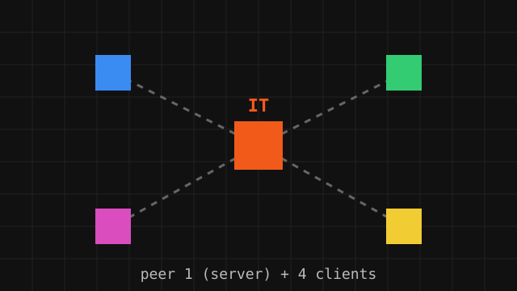
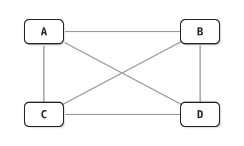
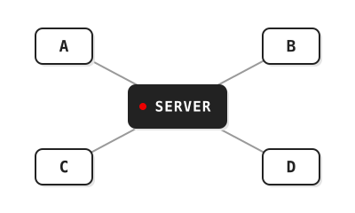
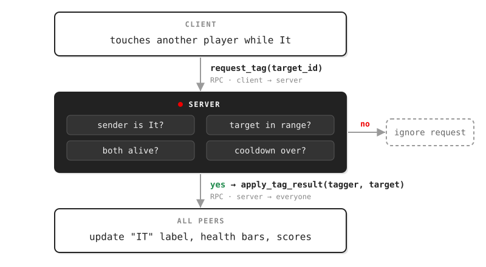
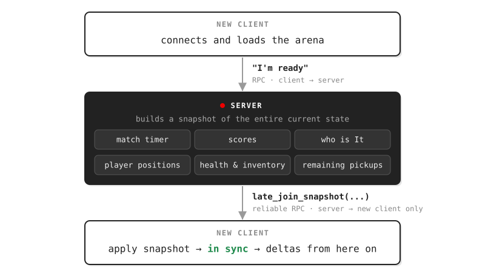

networking concepts, introduction to multiplayer game architecture, then building a multiplayer tag game in Godot

1. what makes multiplayer games hard (and why it's not just "send the position")
2. the networking basics every game developer should know
3. how multiplayer games are structured: topologies, authority, and state
4. how state moves between machines: replication, RPCs, and snapshots
5. how Godot's multiplayer API maps onto every one of those ideas
6. the workshop: turning an offline tag game into a networked one, checkpoint by checkpoint
a multiplayer game is any game where more than one human shares the same game world at the same time.
local multiplayer (couch co-op, split screen) runs on one machine; there is only one copy of the game, so there is nothing to keep in sync.
online multiplayer runs on many machines at once. every player's computer runs its own copy of the game, and those copies must agree on what is happening.
that last sentence is the whole problem. everything in this presentation is a technique for keeping many copies of a game close enough to the same that players believe they share one world.
1. the network is slow: a message from New York to London takes ~35ms at the speed of light in fiber, and real routes are slower. by the time you see another player, they have already moved.
2. the network is unreliable: messages can arrive late, out of order, or never.
3. players disagree: two players grab the same item on the same frame. who gets it?
4. players cheat: any code running on a player's machine can be modified. if the client says "I have 9999 HP", should you believe it?
5. players come and go: someone joins halfway through a match and needs to see the world as it is right now.
each workshop checkpoint tackles one of these problems. keep this list in mind: we'll come back to every item.
IP address: which computer to talk to.
127.0.0.1 ("localhost") always means "this computer", which is how we'll test the workshop.port: which program on that computer. the workshop hosts on port
7777.packet: a small chunk of data sent across the network. games send many small packets, many times per second.
latency (ping): how long a packet takes to arrive. round-trip time (RTT) is there and back.
jitter: how much latency varies between packets. jitter is what makes packets arrive out of order.
packet loss: the percentage of packets that never arrive.
bandwidth: how much data per second you can send. more players and more state means more bandwidth.
the two main ways to send data over the internet:
| TCP | UDP | |
|---|---|---|
| delivery | guaranteed, in order | best effort, may drop or reorder |
| on packet loss | everything waits until the lost packet is resent | later packets keep flowing |
| good for | web pages, file downloads, chat | real-time games, voice, video |
TCP's "everything waits" behavior is called head-of-line blocking. for a game, a position from 200ms ago is useless, so waiting for it to be resent only makes things worse.
most games use UDP and add reliability only for the messages that need it. Godot's default transport, ENet, does exactly this: it runs on UDP and lets each message choose reliable or unreliable delivery.
ask one question: if this message is lost, will a newer one replace it soon?
unreliable: positions, rotations, aim direction. we send them 20-60 times a second, so a dropped one is replaced almost immediately.
unreliable ordered: same as unreliable, but if an older packet arrives after a newer one, it is thrown away instead of moving the player backwards.
reliable: one-time events. "you got tagged", "pickup collected", "match over", "player joined". if these are lost, the game state is permanently wrong.
in the workshop, movement uses
unreliable_ordered; tag, health, inventory, and match events use reliable.who talks to whom?
peer-to-peer

everyone talks to everyone. no server cost, but there is no single source of truth and it scales poorly. common in fighting games (with rollback) and RTS games (with lockstep).
client-server

everyone talks only to the server. one source of truth, easy to validate and hard to cheat. the standard for shooters, MMOs, and most online games.
client-server comes in two flavors:
dedicated server: the server is a separate program with no player, usually running in a data center.
listen server (a "host"): one player's game is also the server. cheap and simple, but the host has zero latency and the match ends if they quit.
the workshop uses a listen server: whoever clicks "Host Game" is both a player and the server.
this is the mental model for the entire workshop. for every multiplayer variable, ask:
1. who owns this?
2. who can change it?
3. who needs to know about it?
4. what happens when someone joins late?
applied to the tag game:
| state | owner | who changes it | who needs it | late join |
|---|---|---|---|---|
| my position | me | me (keyboard) | everyone | spawn at current position |
| health | server | server, from validated tags | everyone (health bars) | snapshot |
| inventory | server | server, from pickup/use requests | owner's UI | snapshot |
| who is It | server | server, from tag requests | everyone | snapshot |
| remaining pickups | server | server | everyone | snapshot |
| timer and scores | server | server | everyone | snapshot |
it helps to group state by what it belongs to:
player state: belongs to one player. position, health, inventory,
is_it.world state: belongs to the level. which pickups still exist, doors, destructible objects.
match state: belongs to the round. timer, scores, whether the match has started, who is currently It.
a common beginner bug: every machine runs its own match timer. they start a few milliseconds apart, drift, and end up declaring different winners. match state needs exactly one clock, on the server.
1. state replication (synchronization): "keep this variable the same everywhere." the authority sends its current value on a fixed schedule, and everyone else overwrites their copy.
great for values that change continuously, like position.
2. remote procedure calls (RPCs): "run this function on another machine." you call a function locally and it executes on the remote peer(s) with the arguments you passed.
great for events and requests, like "request_tag(target)" or "pickup removed".
Godot provides both:
MultiplayerSynchronizer for replication and the @rpc annotation for RPCs.the most important pattern in server-authoritative games. clients never change shared state directly; they ask.

this also solves the "two players grab the same item" problem: the server processes requests one at a time. the first valid request wins, and the second one finds the pickup already gone.
the tick rate (or send rate) is how often state updates are sent. the workshop replicates player positions every 0.05s, or 20 times per second.
higher tick rates mean smoother remote players, but cost more bandwidth. bandwidth grows with players × state × tick rate, and in client-server games the server sends updates about every player to every client.
not everything needs a high rate. the workshop syncs the match timer only twice per second; every client counts down locally in between and gets corrected.
competitive shooters run at 64-128 ticks per second. MMOs with thousands of players might send distant players only a few times per second.
the left screen is the authority, where the player really is. the right screen is another player's machine, which only knows what arrives over the simulated network.
hover the left screen and use WASD to drive, or let it move on its own. then play with the sliders.
authority (sender)
remote peer (receiver)
things to try:
drop the send rate to 5 Hz in snap mode: the remote player teleports in jumps.
switch to interpolate: smooth again, but even further behind.
add packet loss and jitter, then try extrapolate: it guesses ahead and overshoots every turn.
the workshop uses "snap to latest" on purpose. it's the simplest correct approach, and remotes looking slightly late is okay. the other modes are next steps.
production games layer several techniques on top of basic replication:
1. interpolation: render remote players a little in the past, smoothly blending between two known updates. smooth, but adds delay.
2. extrapolation (dead reckoning): guess where a remote player is now from their last velocity. zero delay, but wrong whenever they change direction.
3. client-side prediction: in a fully server-authoritative game, apply your own input immediately instead of waiting a round trip for the server to answer.
4. server reconciliation: when the server's answer arrives, rewind to it and replay the inputs it hasn't seen yet, fixing any mispredictions.
5. lag compensation: the server rewinds other players to where the shooter saw them when checking hits. this is why you sometimes get shot after reaching cover.
6. rollback: used in fighting games. predict the opponent's inputs, then rewind and re-simulate when the real inputs arrive.
most messages are deltas, which describe changes: "pickup 3 removed", "Player 2 is now It", "Player 4 lost 25 HP".
a player who joins mid-match missed every delta that came before. applying only future changes to a fresh world gives the wrong result: pickups that are gone reappear, and the timer shows 120 seconds.
the fix is a snapshot: when a player joins, the server sends the entire current state once, and deltas take over from there.

Godot 4 includes a "high-level multiplayer API" that maps directly onto everything we've covered:
| concept | Godot |
|---|---|
| transport (UDP + optional reliability) | ENetMultiplayerPeer (also WebSocket and WebRTC peers) |
| connecting as server / client | create_server(port), create_client(ip, port) |
| turning networking on | multiplayer.multiplayer_peer = peer |
| identifying machines | peer ids: the server is always 1, and clients get random positive ids |
| join / leave events | peer_connected, peer_disconnected, connected_to_server, ... |
| authority | set_multiplayer_authority(id), is_multiplayer_authority() |
| RPCs | @rpc annotation, .rpc(), .rpc_id() |
| state replication | MultiplayerSynchronizer |
| spawning across the network | MultiplayerSpawner |
the key idea: every machine has the same scene tree. a node at
/root/Arena/Players/Player_1 exists on every peer, and Godot uses that shared node path to deliver RPCs and replicated values to the right node.mark a function as callable over the network, then call it with
.rpc() (everyone) or .rpc_id(peer) (one peer):@rpc("any_peer", "reliable") func request_tag(target_peer_id: int) -> void: if not multiplayer.is_server(): return var sender := multiplayer.get_remote_sender_id() _server_handle_tag(sender, target_peer_id) # on the client: request_tag.rpc_id(1, target_id) # peer 1 = the server
the annotation takes up to four options:
| option | values | meaning |
|---|---|---|
| who may call | "authority" (default), "any_peer" | only the node's authority, or anyone. requests from clients to the server need any_peer |
| run locally too? | "call_remote" (default), "call_local" | whether the caller also runs the function itself |
| transfer mode | "unreliable" (default), "unreliable_ordered", "reliable" | the delivery guarantees from earlier |
| channel | integer, default 0 | independent lanes, so a lost reliable packet on one channel doesn't block another |
any_peer means anyone can call it, including cheaters. always check get_remote_sender_id() and validate before doing anything.a top-down tag arena in Godot 4.3+. it's already a complete, working offline game, and our job is to make it multiplayer.
WASD to move, Shift to sprint, 1 / 2 / 3 to use items. whoever is It (orange) tags other players to score points and deal damage. pick up health potions (red), speed boosts (cyan), and shields (yellow). highest score after 120 seconds wins.
git clone https://github.com/aderoian/multiplayer_fundamentals_workshop.git cd multiplayer_fundamentals_workshop git checkout workshop/00-starter
open
project.godot, press F5, and click Play Offline to make sure it runs.every gap is marked in the code with a
WORKSHOP TODO comment explaining what's wrong, the concept, why it matters, and what to change. search the project for it.each checkpoint is a git branch. if you fall behind, check out the next one and keep going.
| # | branch | focus | concept |
|---|---|---|---|
| 00 | workshop/00-starter | offline game + TODOs | the four questions |
| 01 | workshop/01-connect | ENet host / join | peers, peer ids, connection signals |
| 02 | workshop/02-player-spawning | one player per peer | network spawning |
| 03 | workshop/03-player-authority | input + camera | authority |
| 04 | workshop/04-movement | sync position | replication, unreliable messages |
| 05 | workshop/05-tag-system | tagging | request → validate → broadcast |
| 06 | workshop/06-health | damage, death, respawn | server-authoritative state |
| 07 | workshop/07-inventory | pickups + items | contested actions, first valid wins |
| 08 | workshop/08-world-state | timer, scores, pickups | world and match state |
| 09 | workshop/09-late-join | mid-match joiners | snapshots vs deltas |
| 10 | workshop/10-complete | reference solution | handling disconnects |
each checkpoint also has a tag (
checkpoint-00 through checkpoint-10).you don't need two computers. run two copies of the game on your machine:
1. in Godot, open Debug → Customize Run Instances, enable multiple instances, and set the count to 2 or 3
2. press F5. in one window click Host Game
3. in the other window click Join Game with IP
127.0.0.1 and port 7777to test late join (checkpoint 09), start a third instance after the match is already underway.
goal: play the offline game and find every
WORKSHOP TODO.the gameplay is done. Host and Join exist but just print "Networking is a workshop exercise".
before writing any networking code, walk through the four questions for position, health, inventory, It, pickups, and the timer.
think about it: what breaks if two machines each run their own match timer?
goal: Host and Join create a real ENet connection. file:
network/network_manager.gdcreate a peer, start it as server or client, and hand it to Godot:
func host_game(p_port: int = DEFAULT_PORT, p_name: String = "Host") -> Error: var peer := ENetMultiplayerPeer.new() var err: Error = peer.create_server(port, DEFAULT_MAX_CLIENTS) if err != OK: return err multiplayer.multiplayer_peer = peer # networking is now on local_peer_id = multiplayer.get_unique_id() # always 1 on the server ... func join_game(p_address: String, p_port: int, p_name: String) -> Error: var peer := ENetMultiplayerPeer.new() var err: Error = peer.create_client(address, port) ... multiplayer.multiplayer_peer = peer # not connected yet: wait for the signal
connecting takes time, so listen for the result with signals:
func _ready() -> void: multiplayer.peer_connected.connect(_on_peer_connected) # someone joined multiplayer.peer_disconnected.connect(_on_peer_disconnected) # someone left multiplayer.connected_to_server.connect(_on_connected_to_server) multiplayer.connection_failed.connect(_on_connection_failed) multiplayer.server_disconnected.connect(_on_server_disconnected)
common mistakes: forgetting to assign
multiplayer_peer, or clicking Join before the host is listening.think about it: what is my peer id on the host? on the first client?
goal: one
Player instance per connected peer, on every machine. file: network/network_player_spawner.gdif three peers are connected, each machine needs three Player nodes: one for itself and two replicas.
a
MultiplayerSpawner watches a parent node (Players). when the server spawns a child there, the spawner creates the same child on every client, with the same name and path.# server: spawn a player for a peer var data := {"peer_id": peer_id, "player_name": display_name} _spawner.spawn(data) # spawn_function: runs on EVERY peer with the same data func _spawn_player_from_data(data: Variant) -> Node: var player := PLAYER_SCENE.instantiate() player.name = "Player_%d" % peer_id # same name → same node path everywhere player.set_multiplayer_authority(peer_id) ... return player
despawn by freeing the node on the server when
peer_disconnected fires; the spawner removes it everywhere.gotcha: don't spawn on
peer_connected right away. the client may not have loaded the arena yet, so the workshop waits for the client to send a "ready" RPC first.think about it: bodies now exist, but when you press W, which players move?
goal: only the owning peer reads input, and only their camera is on. file:
scripts/player/player.gdthe Player node is duplicated on every machine, but only one computer should read WASD for it: the one where that human is sitting.
func _apply_setup() -> void: if multiplayer.multiplayer_peer != null: set_multiplayer_authority(peer_id) camera.enabled = _should_process_input() func _should_process_input() -> bool: if multiplayer.multiplayer_peer == null: return is_local_controlled # offline still works return is_multiplayer_authority() # online: only my player
common mistakes: enabling every camera, or checking
multiplayer.is_server() for input. that makes the host control everyone.think about it: which computer should read the keyboard for Player 2: the host, or the machine where that human sits?
goal: everyone sees everyone move. files:
scenes/player.tscn, scripts/player/player.gdadd a
MultiplayerSynchronizer to the player scene and add position to its replication config. it sends the value from the node's authority to everyone else, here every 0.05s (20 Hz).the workshop also shows the manual version, an unreliable RPC sent every physics frame:
func _broadcast_transform() -> void: if not is_multiplayer_authority(): return rpc_set_transform.rpc(global_position, 0.0) @rpc("any_peer", "unreliable_ordered", "call_remote") func rpc_set_transform(pos: Vector2, _rot: float) -> void: if is_multiplayer_authority(): return global_position = pos
remotes look slightly behind, which is fine. no prediction, no interpolation: that's the "snap to latest" mode from the demo.
common mistake: building interpolation or rollback "while we're here". get it correct first, then make it smooth.
think about it: who is allowed to invent a new position for my player?
goal: tagging is a request; the server validates it and everyone gets the result. files:
tag_component.gd, player.gd, match_manager.gdthe wrong way: the client that touched someone sets
target.is_it = true. now every machine can disagree about who is It, and a cheater can tag from across the map.func _server_validate_tag(tagger_id: int, target_id: int) -> bool: if Match.current_it_player != tagger_id: # are you actually It? return false ... if not t_health.is_alive or not o_health.is_alive: # both alive? return false if not t_tag.can_tag_now(): # cooldown over? return false if tagger.global_position.distance_to(target.global_position) > TagComponent.TAG_RANGE: return false # close enough? return true func _server_apply_tag(tagger_id: int, target_id: int) -> void: Match.add_score(tagger_id, 1) Match.rpc_apply_tag_result.rpc(tagger_id, target_id) # broadcast to everyone
gotcha: the host is also a player, and it can't
rpc_id(1, ...) to itself. when the host is the requester, call the server handler directly.goal: damage, shields, death, and respawn happen only on the server, and health is synced to everyone. files:
health.gd, player.gdclients never set another player's HP. they receive the server's value and display it:
func on_tagged_by_network(from_peer_id: int) -> void: if multiplayer.multiplayer_peer == null or multiplayer.is_server(): health.take_damage(Match.TAG_DAMAGE) # only the server mutates _sync_health_to_peers() @rpc("any_peer", "call_remote", "reliable") func rpc_sync_health(p_health: int, p_alive: bool, p_shield: bool, p_pos: Vector2) -> void: health.apply_replica(p_health, p_alive, p_shield) # display, never invent ...
the respawn timer also runs only on the server. otherwise every machine would respawn the player at a slightly different time and place.
goal: pickups and item use are requests, and the server grants each pickup exactly once. files:
inventory.gd, pickup.gd, player.gdtwo players touch the same potion on the same frame. both send
request_pickup. the server handles them one at a time:func _server_pickup(sender: int, pickup_net_id: int) -> void: if sender != peer_id: # can't pick up for someone else return if not health.is_alive or not inventory.has_space(): return var pickup := _find_pickup(pickup_net_id) if pickup == null: # second requester ends up here return ... # range check inventory.add_item(pickup.get_item_id()) pickup.queue_free() # consume first rpc_sync_inventory.rpc(inventory.slots.duplicate()) Match.rpc_remove_world_pickup.rpc(pickup_net_id) # gone for everyone
pickups are identified by a stable
pickup_net_id (1, 2, 3, ...) assigned by the server, not by a node's instance id. instance ids are different on every machine.goal: the server owns the timer, scores, and remaining pickups, and clients display copies. file:
scripts/game/match_manager.gdfunc _should_tick_timer_locally() -> bool: if multiplayer.multiplayer_peer == null: return true # offline: tick locally return multiplayer.is_server() # online: ONLY the server ticks # server, every SYNC_INTERVAL (0.5s): rpc_sync_timer.rpc(match_time_remaining, match_started, match_over_shown) @rpc("authority", "call_remote", "reliable") func rpc_sync_scores(scores: Dictionary, it_id: int) -> void: player_scores = scores.duplicate() current_it_player = it_id
note the
"authority" mode: Match is an autoload owned by the server, so only the server may call these. a client calling them is rejected.one clock, one scoreboard, and one winner, with everyone agreeing on all three.
goal: a player joining mid-match sees the world exactly as it is. files:
network_player_spawner.gd, match_manager.gd, player.gdfunc build_and_send_late_join(to_peer: int) -> void: var players_data: Array = [] for n in get_tree().get_nodes_in_group("players"): players_data.append(n.build_state_snapshot()) # pos, It, HP, inventory... var pickups_data: Array = [] for p in get_tree().get_nodes_in_group("pickups"): pickups_data.append({"id": p.pickup_net_id, "item_id": p.item_id, "pos": p.global_position}) rpc_late_join_snapshot.rpc_id(to_peer, to_snapshot(), players_data, pickups_data)
the snapshot goes to only the new peer (
rpc_id), over a reliable channel.verify it: actually connect a third instance after tags have happened and pickups are gone. check the timer, scores, who is It, health bars, and pickups.
goal: compare your work to the reference solution and handle the last edge case: what if It disconnects?
func _on_peer_disconnected(id: int) -> void: if multiplayer.is_server(): var was_it: bool = (Match.current_it_player == id) _despawn_for_peer(id) Match.remove_player_score(id) if was_it: _reassign_it_after_disconnect() # server picks a new It, syncs everyone
without this, the match gets stuck with nobody able to tag.
the
WORKSHOP TODO markers are gone, and each system keeps a short comment answering the four questions. that's a good habit for any multiplayer codebase.1. trying to "add multiplayer" everywhere at once. go one system at a time and ask the four questions for each.
2. trusting the client.
any_peer RPCs must validate the sender and the request.3. confusing "server" with "authority".
is_server() asks "am I peer 1?", while is_multiplayer_authority() asks "do I own this node?"4. running game logic on every peer. timers, damage, and respawns must run once, on the owner.
5. mismatched node paths. RPCs are delivered by path, so the node must exist with the same name on every peer.
6. forgetting the host is a player. the host needs the same code paths as clients, minus the network hop.
7. only syncing changes. late joiners need a snapshot.
8. breaking offline mode. check
multiplayer.multiplayer_peer == null so single-player still works.1. smooth remote players with interpolation (try it in the demo above)
2. move all movement to the server with client-side prediction and reconciliation, so speed hacks stop working
3. play over the internet: port forwarding, NAT traversal, and relay services, or WebRTC for browser games
4. dedicated servers: export a headless Godot build (
--headless) and run it in the cloud5. matchmaking and lobbies: Steam networking, or a small lobby service
6. interest management: only send each player what they can see (
MultiplayerSynchronizer visibility filters)multiplayer is the art of keeping many copies of a game close enough to the same that players believe they share one world.
the network is slow, unreliable, and full of people who want to cheat, so we pick a topology, give every piece of state exactly one authority, send events reliably and continuous state unreliably, validate every request, and snapshot the world for anyone who shows up late.
and when in doubt, ask the four questions: who owns it, who can change it, who needs it, and what happens when someone joins late?
code and presentation materials are written by Armen Deroian
High-level multiplayer - Godot Docs
Multiplayer in Godot 4.0: Scene Replication - Godot Blog
Game Networking - Glenn Fiedler (Gaffer On Games)
Fast-Paced Multiplayer - Gabriel Gambetta
Source Multiplayer Networking - Valve
1500 Archers on a 28.8 - Mark Terrano & Paul Bettner